Operating System Introduction(Part1)
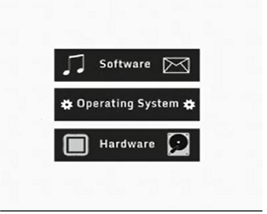
Windows|Mac|Linux - Are the big operating system contenders.
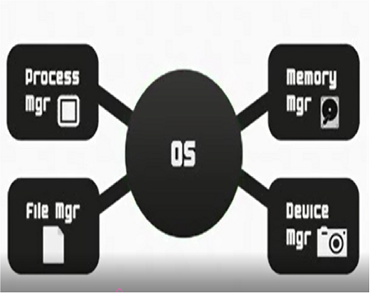
Memory Manager-act of managing computer manage at the Level is to provide ways to dynamically allocate partition of
memory to programs at their request.
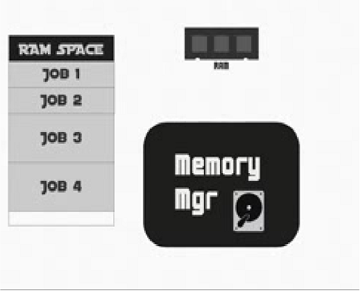
Process Manager-handle to all job your system.
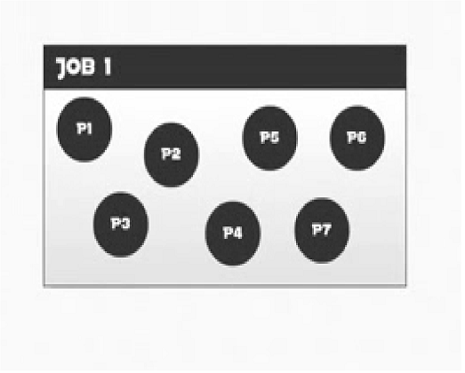
File Manager-that can be handle all file or application that cab on your computer.
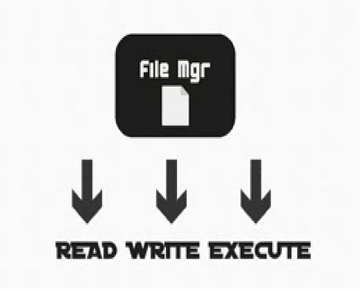
Device Manager-the allocate the all devices that Connected into a computer.
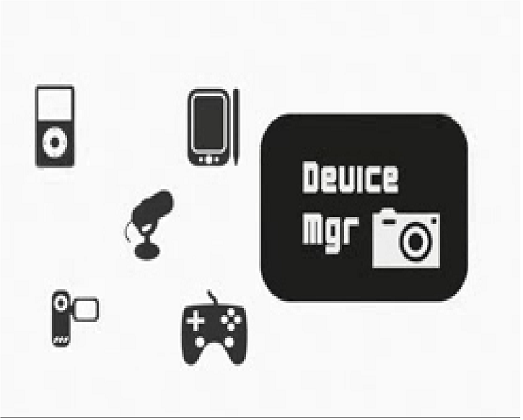
Network Manager-Provide the user to share the hardware and software were also control the access to use them.

Memory Manager(Part 2)
Scheme 1--------Single User Contiguous -is their only one job
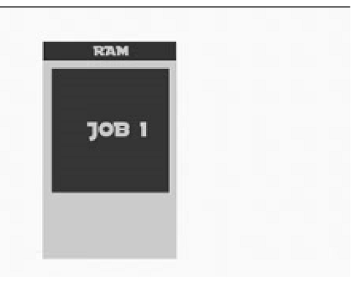
Scheme 2--------Fixed Partition -is their one or more job.
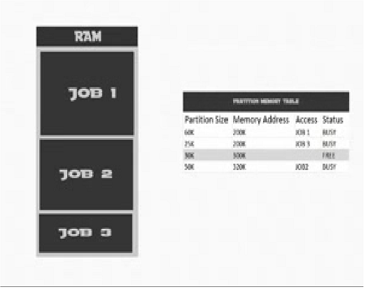
Scheme 3--------Dynamic Solution -to avoid to reboot of a computer every time process to a job.

2 WAYS
-First fit allocation
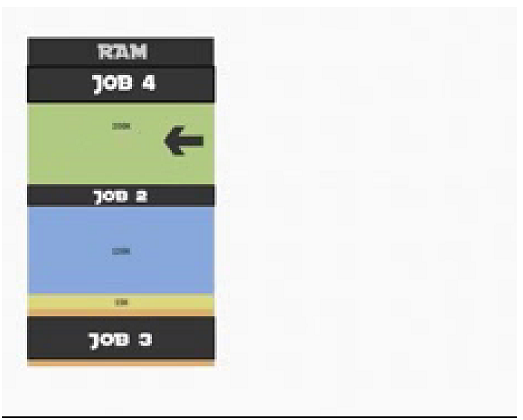
-Best fit allocation
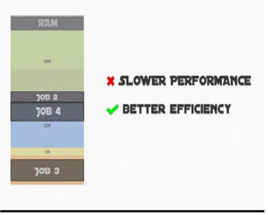
Remove from memory (is called that deallocations)
Memory Manager - can store the an a program.
VIRTUAL MEMORY - is allowing divided the jobs to equal size part.
PAGED MEMORY ALLOCATION
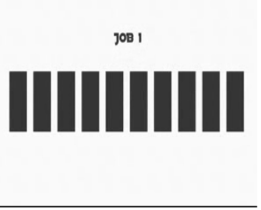
3 TABLES
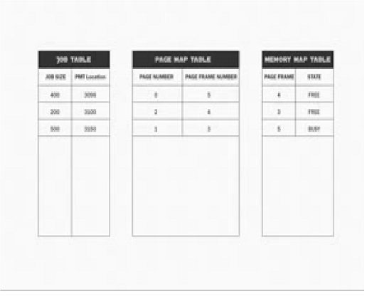
Page Map Allocation - Can be demand paging.
How to determine replacement of pages
-by using page replacing
policy.
*First In First Out.
*Least Recently used.
*Least Frequently used.
*Most Recently used.
PROCESSING MANAGER(Part 2)
CPU-Central Processing Unit
Intervene& Time slicing or priority jobs-presents 2 type of schedulers
5 Process state:
*HOLD
*READY
*RUN
*WAIT
*FINISH
-FCPS (First Come First Serve) non pre emptive.
-SJN (Shortest Job Next) non pre emptive.
-(Priority Scheduling) non
pre emptive.
3 Limitations of the System
*FINITE NUMBER RESOURCES
*REASSIGN
*QUICK RESPONSES
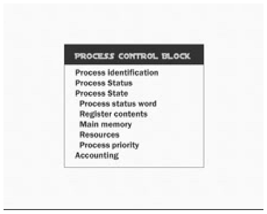

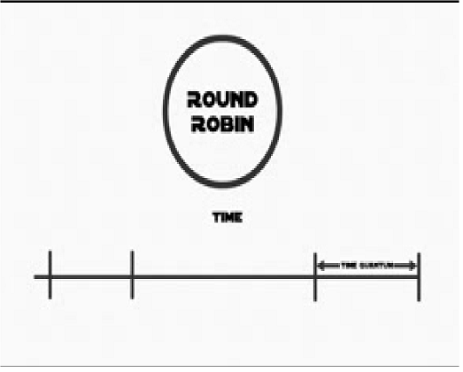
FILE MANAGER
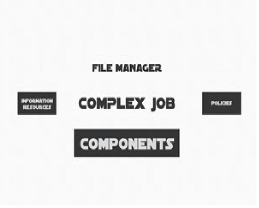
Complex Job
Is a physical components
Information resources
Policies
It has keep track each file restored
Use a policy
determined
Allocate each files and deallocate when use turned it to storage.
© Russel Mallari|Lorence Nozaleda